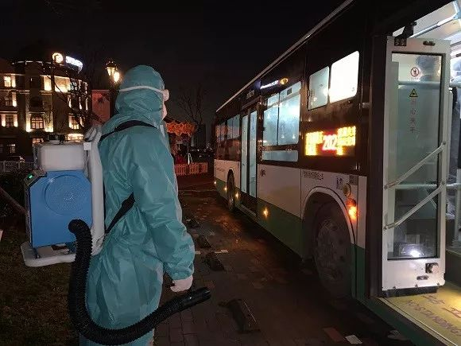

肺炎日记|2月16日：未及时收治令多少家庭破碎?
原文链接 备份链接 【财新网】（记者 丁捷 综合）距离新冠肺炎的出现迄今已经超两月。病毒从何而来尚未明晰。2月16日，中科院武汉病毒研究所发布声明，辟谣“零号病人”。此外，全国前两例感染患者遗体解剖完成，这两具由解剖获得的新冠肺炎病理目 …
澎湃新闻记者 廖艳 实习生 赵雨萌 发自武汉
“这是一扇幸运之门。”
穿过走廊，梅琴指着4号电梯介绍，隔离期满的密切接触者都是从这个电梯出去的；而走楼梯下去的密接者，则意味着他们出现了症状，需要转诊，严重者可能就确诊了。
梅琴所在的隔离点是一家“旅居养老”式酒店，坐落于武汉汉南区绿地城欧洲风情小镇上，距离市中心约一小时车程。
此前数日，它被征用为隔离“确诊新冠肺炎患者的密切接触者。”（简称：密接隔离点）
梅琴工作的卫生院接管了密接隔离点酒店的第二、三、四层，每层19间房间，共57间房全部被征用，作为密接者的隔离房间。
“现在基本上是保持‘出一个进一个’的状态。”作为隔离点负责医护工作的陈桥告诉澎湃新闻（www.thepaper.cn），在“应收尽收”、“应治尽治”的要求下，他们卫生院接管的两个隔离点，两三天就满员了。
自2月3日至2月13日，他们所在的密接观察点累计接待66名密接者。截至2月15日，己转诊7名疑似新冠肺炎患者。
而在他们接管疑似新冠肺炎患者隔离点的一周时间内，由于核酸检测加快以及加之临床诊断，已有十几名确诊新冠肺炎患者被转运至定点医院住院治疗。
而陈桥和梅琴所希望的，是有更多的密接者能走过那扇 “幸运之门”。
被征用的酒店
2月2日，湖北省新型冠状病毒感染肺炎疫情防控指挥部印发《关于加强发热病人、发热疑似病人及密切接触者隔离救治和管理的通知》。通知提出，各市、州、县立即征用位置相对独立、对周边环境影响小、具备水电气和清洁排污保障条件的宾馆、酒店、招待所等资源，迅速改造为集中隔离点。
2月13日下午，澎湃新闻记者驱车一小时，穿过二道关卡，实地探访一家被征用的酒店——绿地康养居酒店，用作于收治密切接触者（简称：密接者）。
这家酒店的第二、三、四层，每层19间房间，共57间房被征用。
进入酒店之前，门口有两名安保人员，一个手中拿着红外测温仪，一个拿着装满酒精的喷壶。
“等等。”保安叫住准备进入酒店的一名男子，他拿着红外测温仪对着男子额头测了测，仪器报出男子的体温为“36.5℃”。另一名保安，拿着喷壶往男子身上、鞋底喷上酒精。随后，男子才被放行进入酒店。
马明是这家酒店的厨师长，他也临时担任起酒店的调度工作。马明和他的同事们会身穿防护服、N95口罩。由于缺少防护手套和护目镜等防护装备，他们有些同事并没有戴护目镜。
几名同事坐在前台，手中拿着对讲机，对话那头时不时传来在隔离区域医护人员的声音，将病人的需求告诉他们，然后再由他们送到缓冲区域。
马明介绍，1月30日，酒店征集员工报名自愿参与本次疫情服务。原本酒店有26名员工，由于封城，外省不少工作人员无法回岗，目前只有12名工作人员在岗。为了保证酒店的正常运营，工作人员没有轮班制，基本处于24小时的超负荷工作状态。
接到通知后，按照收治新冠肺炎密切接触者的要求，他们对酒店的门窗也做了相应的调整。将通往步梯的门，均加了门闩，门只能由工作人员单向打开。“这是为了防止密接者到处乱走。”马明说。
2月3日，酒店开始接收与新冠肺炎的密切接触者。
马明说，酒店仅面向与确诊新冠肺炎患者的密切接触者，自2月3日起，酒店共接收与新冠肺炎密切接触者66名，3人因为隔离期满已离开酒店，另有3人因出现发热症状被送至武汉市人民医院，现已确诊感染新冠肺炎。截至2月13日，酒店现有48名密接者，晚上还要来3名。
谈及疫情期间物资采购是否有困难，马明表示，因为封城，物资采购确实有点困难，酒店每天要为100人供应餐食，需求量较大，但在努力克服物资不足的情况，尽可能保证菜品种类多样，保证每餐都是两荤两素、一汤。
酒店员工主要负责是密接者和医护工作人员餐饮和后勤工作。
酒店在接收密接者前就已经在房间中把相关的生活物品配齐，也配合政府做了相关预案。若病人出现发热状况会联系社区送至汉南区人民医院。
酒店员工肖梅说，2月6日，酒店里出现第一例确诊病例后，有工作人员开始担心自己是否会感染。其中有一名工作人员正处于哺乳期，孩子才6个月，想孩子时就只能通过视频看孩子，但为了抗击疫情，在努力调整状态，坚守岗位。“有些员工情绪上会些许波动，有些害怕，他们有时候会在深夜时找我聊一聊。”肖梅说。

正在送晚餐的工作人员
一人一间房
进入隔离区域之前，需要穿行一段缓冲隔离区域。
酒店内部是一个U字结构，密接者与工作人员的区域是分开的，为防止医护人员被交叉感染。
每个隔离者房间门上均贴有一张信息表，上面会标注姓名、性别、年龄、既往史、隔离时间等信息，以方便医护人员查体温、沟通交流。
房间门口放置了一张两层式的桌子，第一层放置餐食，第二层放垃圾。早餐一般有馒头、稀饭、鸡蛋、牛奶等餐食，午餐、晚餐可保证两荤一素，还会搭配一些水果，比如橘子、苹果。
住在走廊尽头的蔡洁，是其中一名被隔离的密接者。她戴着玫红色的口罩，遮住了大半张脸，但仍可看出她眉宇之间的清秀。
蔡洁的母亲被确诊患上新冠肺炎，她和父亲一同住进这家隔离酒店。
蔡洁介绍，她的母亲是汉南区人民医院的一名护士，在医院上班时感染了新冠病毒肺炎。母亲被确诊后，2月4日，社区通知她与父亲一同来到这里进行隔离，目前尚无发热、咳嗽等症状，母亲也正在医院接受治疗，情况有好转。
“当时我妈妈在家发烧五天，第一次拍肺部CT检测时，并未检查出异样。”蔡洁说，隔了一段时间，再次经过核酸检测以及ct检测，妈妈才被确诊。
“我现在挺担心妈妈，毕竟她一个人在医院。”蔡洁说。
蔡洁是一名初中音乐教师，由于线上教学，她每天在酒店里还需要备课，准备一周一次的线上教学。
蔡洁住的是一间标准，两张床，床的对面就是窗户，父亲住在她的隔壁。“我待在房间不工作的时候，就会追剧。”蔡洁说，房间卫生都是自己来做清洁，她一般隔三天会把地板擦一下。她还介绍，楼道每天都有工作人员做消毒处理，他们把垃圾放在门口，每天都有人过来清理。
最初，蔡洁对于新冠病毒肺炎还是很害怕的，不过现在她的情绪有所平缓。“我现在住在这里的环境挺好的，医护人员每天会给我量两次体温，酒店员工负责一日三餐。”蔡洁说，但她现在挺担心妈妈，毕竟她一个人在医院。
根据管理要求是一人一间房，进行单独隔离，避免交叉感染。
“但实际情况，有年纪大的，有年幼的，这样就不能完全避免了，所以有时候就需要其他的人进行陪护。我们这里有一个85岁的老人，他在自理方面比较差一点。对于这种情况，我们只能允许他的孙子可以上去照顾老人。但我们也跟他们做了很严格的要求，比如说，即使在房间之内也要戴口罩，照顾时长不要过长以及次数不要过于频繁，以避免交叉感染。”陈桥说。

隔离房间门口的小桌子
24小时在线的医护人员
“这里是污染区了吗？”
“不，我们叫做观察区。”护士梅琴解释说，他们只是密接者，如果叫做“污染区”，会对他们造成心理上的影响。
与陈桥同一所医院的护士梅琴，她也已经连续工作半个月。
今天上中班的梅琴，两小时以前，她便已经进隔离区。梅琴穿着白色的防护服，戴着两层手套，在昏暗的走廊，一眼便可看出她。此时，她的护目镜已经起雾，说话也有点喘，透过护目镜可以看见她额头上流着汗。
“（防护服）里面都是水了，在下雨。”梅琴喘着气说，她正准备给密接者测体温。
曾经抗击过非典的梅琴今年55岁，这是她当护士的第31个年头。她说：“这场疫情是一场持久战。”
梅琴介绍，她们每天会查房两次，4个小时换一次班，每班配备一名医生及一名护士，实施24小时值班制。
梅琴说，她们每天上午9点和下午3点会为密接者量体温以及观察他们的情况变化，有出现异常的，他们会立即联系社区工作人员安排密接者及时转到发热门诊。
药物方面，他们现在为密接者提供了连花清瘟胶囊。此外，根据密接者情况发放适量的新型冠状病毒肺炎1号汤剂。等到14天隔离期过后，生命体征平稳的密接者即可转出隔离区。
说到这，梅琴沿着走廊来到一个电梯门口，她指着这个4号电梯说：“这是一扇幸运之门。”
梅琴说，隔离期满的密接者都是通过这个电梯出去的；走楼梯下去的密接者，则会意味着他们出现了症状，需要转诊，严重者可能就确诊了。“我们希望越来越多的密接者可以从这里出去，而不是走步梯出去。”梅琴说。
梅护士手中一直握着一个对讲机。“我们一共有14部对话机。通过对讲机隔离区内外的传递信息。”梅琴说，密接者如果遇到什么事情，他们可以随时拨打医生值班电话。
布满红血丝的双眼，带着医用口罩、蓝色的头套，陈桥正拿着对讲机，在房间里与同事对接工作。提起梅琴他们，顿了顿，陈桥红了眼眶，他直言：“是我亲手把他们送到一线，我始终对他们抱有感谢的态度，我唯一能做的就是做好他们的防护工作。”
陈桥说，1月7日，他们卫生院开始做“预检分诊”，负责发热病人的转运工作。随后在“应收尽收”、“应治尽治”的要求下，他们卫生院接管的两个隔离点，一个是密接隔离点，一个是疑似新冠肺炎患者隔离点，两三天就满员了。
陈桥少则休息3小时，多则5小时。“同事和我一样，几乎每天都熬夜。”陈桥叹了口气说。
陈桥介绍，对于密接者以及疑似新冠肺炎患者，现在是每人一个档案，有既往病史、病情重的患者，则会重点关注。其中密接点，如果出现发热病人，他们会安排发热病人转运到汉南区人民医院、亚心总医院等医院。
此外，为了照顾他们的情绪，密接隔离点相应地安排了心理医生，为密接者做心理辅导。
梅琴也说，她们还要随时关注密接者的心理变化。她回忆，有一位85岁老人，老伴已经过世，他女儿说要对老人保密，因此她们在查房时就会格外注意老人的心理变化。
谈及工作是否遇到麻烦，陈桥说，他们会遇到密接者对医护人员工作不理解，密接者觉得可能隔离的时间长了，加上活动的区域只有在自己的房间，有点烦躁。“有时候，密接者会与医护人员会产生一些误会。庆幸的是，基本上是言语上的冲突，也都及时解决了。我还是相信大多数人对于我们的工作是理解的。”陈桥说。
就在2月12日，密接隔离点有7名密接者已经解除隔离期，但是又立马住进7名密接者。现在基本上是保持“出一个进一个”的状态。截至2月13日，共有11名密接者平安度过隔离期，回到家中。
下午六点，梅琴脱下防护服，摘下口罩，脸上留有一道很深的印痕，她调侃自己说：“我脸上比较肉，所以容易留下痕迹”。陈桥又迎来一个新的任务，他们卫生院需要再接管一个隔离点，他还在想办法解决人员安排问题。
被隔离的密接者们，他们正在等待度过隔离期。14天之后，有人解除隔离，从4号“幸运之门”的电梯回家了，有的人却被转运车辆送往下一个地点，等待进一步检测。

工作人员正对转运车辆做消杀工作
（马明、肖梅、梅琴、陈桥均为化名）
戳这里进入
“全国新型冠状病毒感染病例实时地图”↓↓↓

本期编辑 周玉华
推荐阅读


原文链接 备份链接 【财新网】（记者 丁捷 综合）距离新冠肺炎的出现迄今已经超两月。病毒从何而来尚未明晰。2月16日，中科院武汉病毒研究所发布声明，辟谣“零号病人”。此外，全国前两例感染患者遗体解剖完成，这两具由解剖获得的新冠肺炎病理目 …
原文链接 备份链接 我也是个普通人，也会恐惧。但我是一名医务工作者，同时是一名党员；我们黄冈的疫情是全国城市里除武汉之外最重的几个之一，这样的困难情况下，我们不去，谁去？必须要坚持，一定要挺住。 口述 | 陈 林 整理 | 王 煜 我是湖 …
原文链接 备份链接 【财新网】（记者 萧辉 包志明）今日（2月11日）凌晨1点，武汉市新冠肺炎疫情防控指挥部发出第12号通告，决定从2月10日起武汉全市范围内所有住宅小区实行封闭式管理，并要求对新冠肺炎确诊患者或疑似患者所在楼栋单元必须 …
原文链接 备份链接 【财新网】（记者 刘登辉 黄姝伦）新冠肺炎疫情肆虐，如何准确识别病人至关重要。目前使用的核酸检测确诊新型冠状病毒感染的肺炎，被披露出存在相当比例“假阴性”的检测结果。这意味着，每日攀升的确诊病例数之外，或有大量的新冠肺 …
原文链接 备份链接 【财新网】（记者 刘登辉 黄姝伦）新冠肺炎疫情肆虐，如何准确识别病人至关重要。目前使用的核酸检测确诊新型冠状病毒感染的肺炎，被披露出存在相当比例“假阴性”的检测结果。这意味着，每日攀升的确诊病例数之外，或有大量的新冠 …